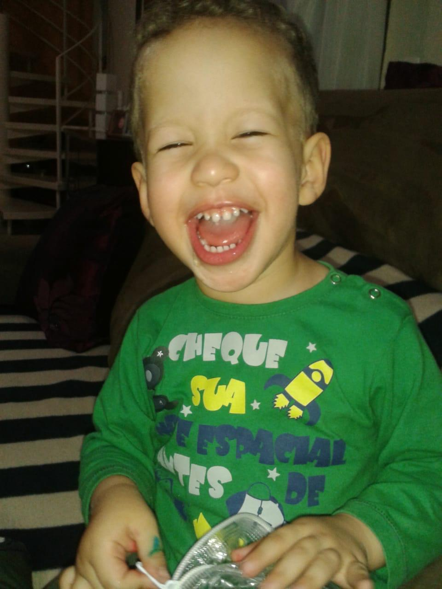
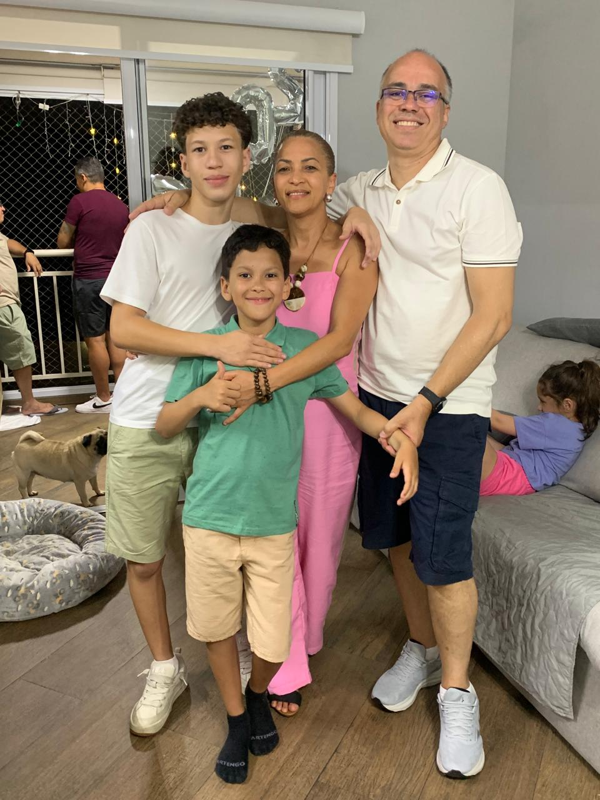
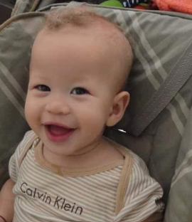
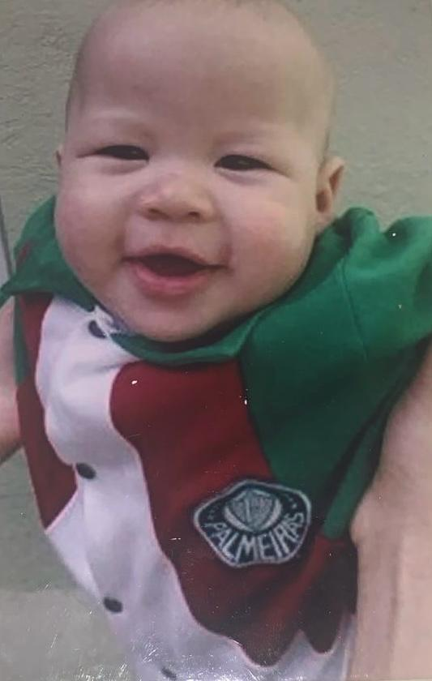
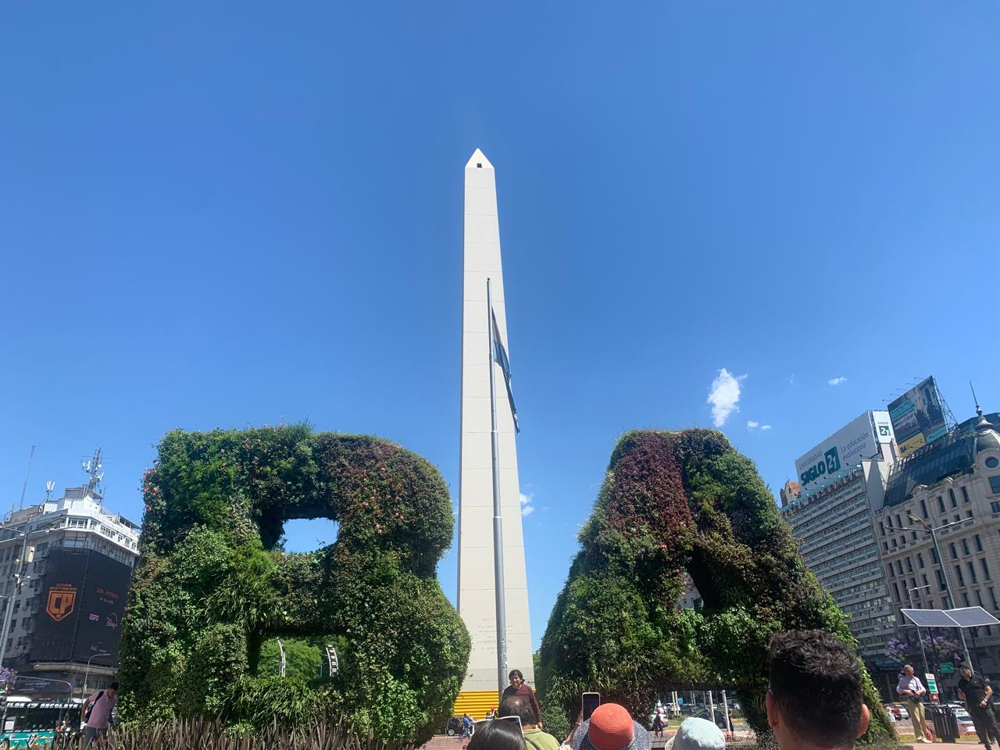
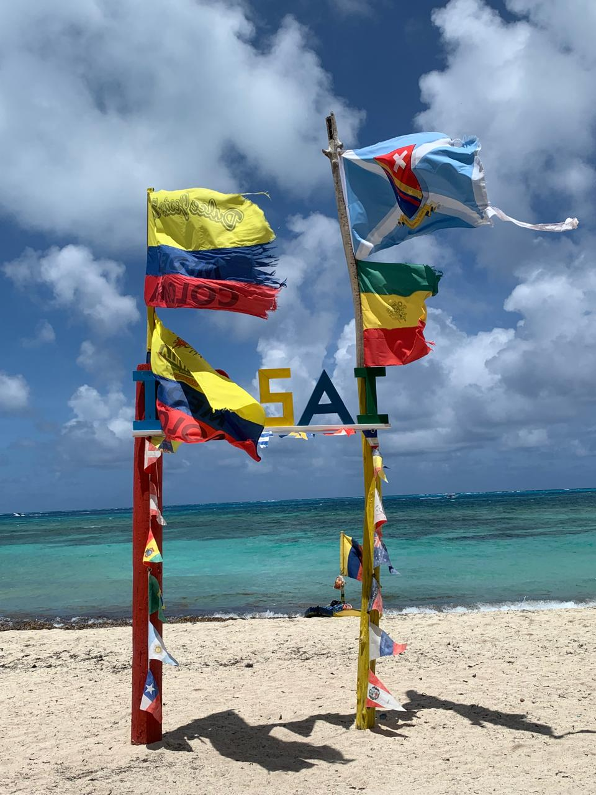
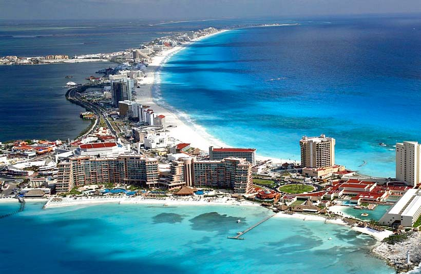

Sobre mim
Nome Completo: Miguel Matias de Almeida Santos
Idade: 15 anos
Aniversário: 04/01/2011

Moradia: Moro no bairro de Pirituba - São Paulo - SP
Moro com:
Meu pai Cristiano
Minha mãe Cacilda
Meu irmão Matheus

Curiosidades sobre mim

Time que torço: Palmeiras

Artistas que escuto:
Bad Bunny: Veja Bad Bunny
Drake: Veja Drake
Shakira: Veja Shakira
Meus esportes favoritos:
Futebol
Basquete
Tênis de Mesa
Natação
Lugares que já fui
-
Buenos Aires - Argentina

Veja Buenos AiresFui em 2024 com minha família visitar alguns companheiros de trabalho do meu pai, adorei visitar o país,
tem paisagens muito bonitas e uma cultura muito forte, também fiz alguns amigos argentinos com quem converso até hoje. -
San Andrés - Colômbia

Veja San AndrésFui em 2025 com meu pai e um companheiro de trabalho para participar de uma conferência empresarial, o que mais gostei foram as praias, a comida e a cultura da ilha colombiana,
lá tinha pessoas de quase todos os países da América Latina que se reúnem todos os anos para a conferência, lá reencontrei meus amigos argentinos.
Lugares que quero visitar
-
Londres - Inglaterra
Veja Londres -
Cancún - México

Veja Cancún